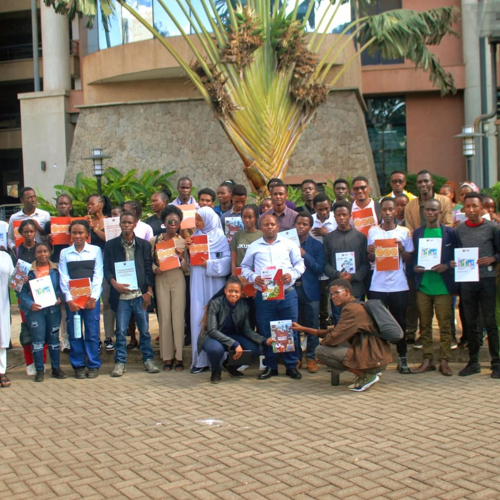

Past Events
Clubs field trip & Team Building
Date: past Event
Time: 2:00 PM – 6:00 PM
Location: copas
---
🉠**Join JKUSOS and Let the Fun Begin!** ğŸ‰
Looking for a place to connect, grow, and have fun? **JKUSOS** is the perfect space for you! Whether you’re here to meet new people, explore exciting opportunities, or just enjoy good vibes — we’ve got you covered. Come be part of our amazing community and make unforgettable memories. Don’t miss out — **the fun starts with JKUSOS!** ---
Tifa Academic Trip
Date: Past Event
Time: :00 pm – :00 PM
Location: Kiambu in Tifa company
---
📚✨ **TIFA Academic Trip – A Journey to Remember!** ✨📚
The **TIFA Academic Trip**, organized by **JKUSOS**, was a perfect blend of learning, exploration, and fun! Students had the opportunity to engage with real-world insights, explore new environments, and build stronger bonds with one another. From academic exposure to unforgettable moments, this trip was truly one for the books. A big thank you to everyone who made it a success — here’s to more impactful experiences ahead! ---
Amrec Workshop
Date: Past Event
Time: :00 pm – :00 PM
Location: School Grounds
---
🛠️📖 **AMREC Workshop – Empowering Minds, Inspiring Action** 📖🛠️
The **AMREC Workshop**, proudly hosted by **JKUSOS**, was an insightful and empowering event that brought together passionate minds for learning, sharing, and growth. Participants gained valuable knowledge, practical skills, and a renewed sense of purpose. From engaging sessions to thought-provoking discussions, the workshop was a great success. We appreciate everyone who took part — your presence made it meaningful. Here's to continued learning and innovation! ---

KNBS Academic Trip
Date: Past Event
Time: :00 pm – :00 PM
Location: Government Office
---
📊🚌 **KNBS Academic Trip – Learning Through Experience** 🚌📊
The **KNBS Academic Trip**, organized by **JKUSOS**, was a valuable educational experience that took students beyond the classroom into the world of real data and national statistics. Hosted by the **Kenya National Bureau of Statistics (KNBS)**, the trip provided a deeper understanding of how data drives development, planning, and decision-making in the country. It was a day filled with learning, networking, and eye-opening insights. A big thank you to all who participated and made the trip a success! ---